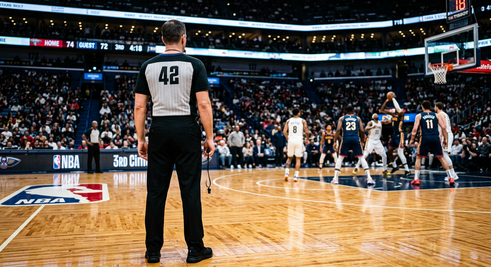
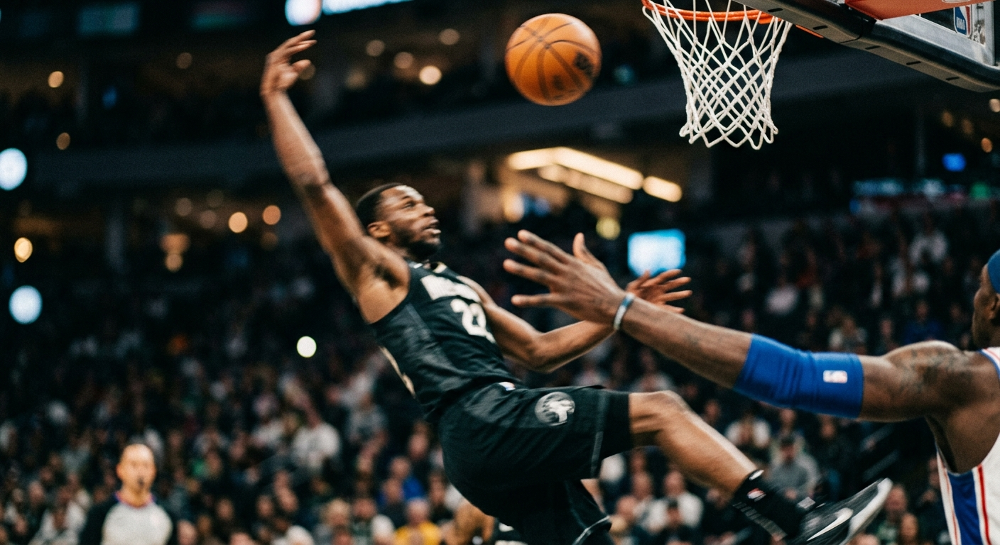
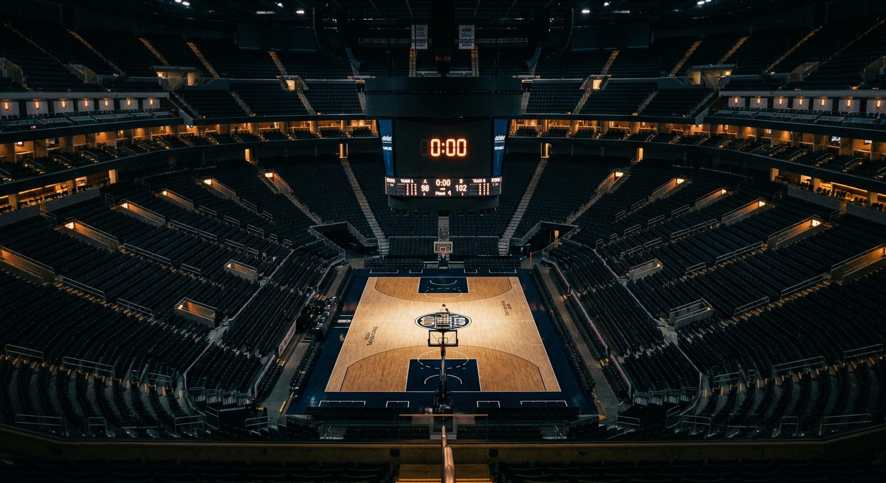

The NBA's Homework
For three and a half seasons, the league has published a PDF every morning saying exactly which late-game referee decisions were wrong. Twenty-five thousand calls later, the folklore about NBA officiating mostly isn't supported by the league's own receipts.
The first time the NBA said "we were wrong"
On the morning of March 2, 2015, the NBA did something no American pro sports league had done before. It published a PDF listing every late-game referee decision from the night before, labeled whether each was right or wrong, with the officials' names attached. The program was called the Last Two Minute Report. It arrived eight years after referee Tim Donaghy went to federal prison for betting on games he officiated, and three years before the Supreme Court legalized sports gambling nationwide.
Since then, the league has graded 25,057 of its own late-game calls across 1,473 games. Of those, it said it got 91.23% right — a blend of 29.58% correct calls, 61.65% correct non-calls, 0.96% wrongful whistles, and 7.81% missed whistles.
That last number is the one that actually tells the story. The NBA's referee mistakes are overwhelmingly not whistles that shouldn't have blown. They're whistles that should have and didn't.
When the refs get it wrong, they get it wrong by silence
Of the 2,197 mistakes the league admits to, 1,957 were missed calls and only 240 were wrongful calls. That's an 8.2-to-1 ratio. When an NBA referee gets it wrong in crunch time, they almost always get it wrong by doing nothing.
The missed calls pile up most heavily on shooting fouls (382) and offensive fouls (349), but the biggest per-play failure rate is somewhere else entirely: defensive three-second violations are missed 63.6% of the time, and traveling violations are missed 43.9% of the time. These are the violations that require constant attention during live action, not moment-of-contact judgment. The crew is good at judging what they see. They're bad at noticing things they're not already watching.
One admitted mistake per game
A typical close NBA game ends with one or two calls the league will later admit were wrong. The average across 1,473 games is 1.49 errors per game. 28.9% of games are clean — zero errors the league will flag. Another 29% have exactly one. But 3.6% (53 games) have five or more errors, and the single worst-officiated game in L2M history had fourteen.
That's the right frame: not "the refs are bad" but "the refs budget one admitted mistake per close game, and a handful of nights a year they completely lose the plot."
The league is getting better — fast
In the program's first partial season (March–June 2015), the error rate was 13.03% — about one admitted mistake every 46 seconds of reviewed game time. Three years later in 2017-18 it was 6.15%, less than half. Errors per game fell from 1.84 to 1.27.
The referees' union hates the L2M. They believe public scrutiny turns fans into coordinated pressure against officials. But the data is consistent with a simpler interpretation: when you grade people's work publicly and they see the grades, they get better.

The Scott Foster test
If the L2M data means anything, Scott Foster should be the first thing it damns. Players have voted Foster the worst referee in the NBA in two anonymous surveys — The LA Times in 2016 and The Athletic in 2023 (n=108). His nickname is "the Extender," for his uncanny knack of officiating playoff games that trailing teams end up winning. He received 134 phone calls from Tim Donaghy during Donaghy's betting period, though federal investigators cleared him. Chris Paul has an openly personal feud with him.
And here is what the public data actually says. Scott Foster worked 94 L2M games — the most in the league. He was a member of the crew for 1,599 graded decisions. His error rate was 9.82%. The league median for referees with 40+ games is 8.83%. Foster ranks 49th out of 59 eligible referees, where 1 is cleanest. He is below median. He is not an outlier.
Ten referees have higher error rates than Foster. Tre Maddox (11.00%), Gary Zielinski (10.80%), and Tony Brown (10.67%) are all measurably worse — yet not a single jersey is being made about them.
Where Foster does show up is in the worst games. He was a member of the crew on two of the three most-erroneous games in the entire L2M history — Knicks at Hawks in January 2017 (11 errors) and Nuggets at Pelicans in March 2015 (10 errors). Which is enough to keep a reputation alive, but not enough to make the numbers say what his critics want them to.
The refs are more similar than the lore says
Among referees who worked at least 40 L2M games, the worst error rate is 11.00% (Tre Maddox) and the best is 6.58% (Dedric Taylor). That's a range of 4.42 percentage points — meaningful but not dramatic. The bottom-ten cleanest referees sit between 6.58% and 7.55%. The top-ten worst sit between 10.03% and 11.00%.
In other words: the "bad refs vs good refs" narrative is roughly a four-and-a-half-percentage-point story — fewer than one extra error every 23 close games. That is the entire spread of the modern NBA officiating crew, as measured by the league itself.
The home-court bias that isn't
Across every referee error in the dataset where the disadvantaged team is identifiable — 2,165 calls — the home team was hurt 1,080 times (49.88%) and the away team 1,085 times (50.12%). A five-call difference across three and a half years.
Published analyses of L2M data have argued there is a small, statistically significant pro-home bias. A 2023 peer-reviewed paper in Nature Scientific Reports found one. The Pudding found one in 2017. But in the clean four-season window observed here, the split is as close to 50/50 as real-world data ever gets. On wrongful-whistles (IC), home teams are actually hurt slightly more often (52.89% vs 47.11%). The "the refs are in the pocket of the home team" trope survives despite the data, not because of it.
The real asymmetry is positional, not personal
The L2M isn't kind to everybody equally. The player most hurt by referee errors is Andrew Wiggins — 22 times disadvantaged by a bad call, 7 times the beneficiary, net -15. Damian Lillard is net -14. Isaiah Thomas is -13. Kemba Walker is -12. These are the guards and wings whose game is driving into late-game contact — the kind of play that produces the hardest calls to judge.
And on the other end, the players who "benefit" from the L2M's math are all big men. Marcin Gortat leads at net -38 (committed-error minus disadvantaged-error): five times hurt, forty-three times the committer. Andre Drummond, Karl-Anthony Towns, and Draymond Green are all at -21. Hassan Whiteside is -19. Al Horford is -19. Superstar treatment isn't uniform. Star guards lose fifteen close-game whistles over a few seasons; star bigs commit forty. The famous LeBron James is almost exactly neutral across 477 appearances — a net of -5 in 25 disadvantaged vs 20 committed.
This is the most honest answer to "do the refs favor stars." The data says: they favor whoever happens to not be standing near the basket committing the act the league most often notices — which is overwhelmingly the guy attacking with the ball, not the guy defending without it.

The buzzer isn't where the mistakes happen
The last 30 seconds of a close NBA game account for 9,363 reviewed decisions — 37% of the entire four-season dataset despite being only 25% of the two-minute window. Crunch time is dense: timeouts cluster, fouls stack, the ball changes hands repeatedly, and every possession gets parsed.
And yet in the most-scrutinized ten seconds — 0 to 9 seconds left — the error rate drops to 6.62%, the lowest of any ten-second bucket. The single worst window is 40–49 seconds, where 10.07% of decisions are graded wrong. The crew's hardest stretch is not at the end. It's a full 40 seconds before that.
One way to read it: when the game truly hangs on a whistle, the league has built an ecosystem — video review, the replay center in Secaucus, multiple angles — that catches most of what would otherwise slip. The mistakes happen before the whole apparatus wakes up.
What transparency actually changed
The L2M launched in 2015 with a specific bet: that publishing mistakes, by name, would make the league more credible. Three years before PASPA fell and sports betting became legal, commissioner Adam Silver was already building the infrastructure of a league that could be trusted with billions in wagered dollars.
The data says the bet paid off, at least on the narrow axis the program set out to measure. Error rates halved. Errors per game dropped by 31%. The referees' union wants the reports killed; the players, at least publicly, mostly agree. But in the four years of evidence we now have, the only group whose behavior changed visibly was the one being graded.
The L2M did not make the refs perfect. It made them better. The next time a ref blows a whistle with three seconds on the clock, that is the one thing worth remembering — not the call itself, but the PDF that will be posted in the morning.

References
- Data: The Last Two Minute Report archive, compiled by atlhawksfanatic/L2M from official.nba.com. 25,057 graded decisions, March 2015 – June 2018.
- Program FAQ: NBA L2M FAQ.
- Peer-reviewed analysis: Price, J. et al. (2023). Quantifying implicit biases in refereeing using NBA referees as a testbed. Scientific Reports.
- Union critique: ESPN — Referees union calls for end of L2M reports.
- Scott Foster reputation: Wikipedia: Scott Foster; CBS Sports, The Athletic 2023 anonymous survey (n=108).
- Donaghy scandal: 2007 NBA betting scandal.
- Tools: Vega-Lite 5, Vega 5, Vega-Embed 6.